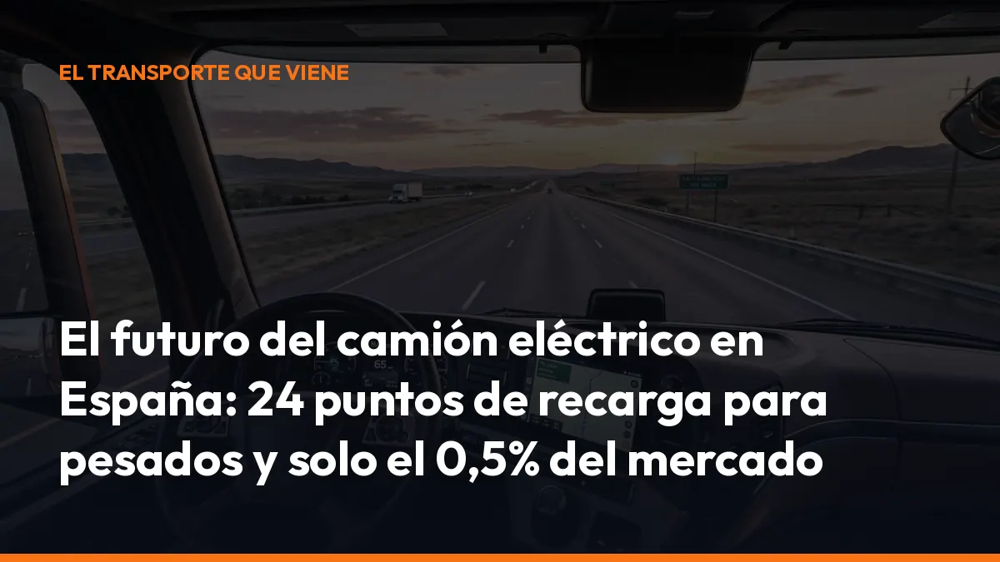

El futuro del camión eléctrico en España: 24 puntos de recarga para pesados y solo el 0,5% del mercado

Pero España avanza demasiado despacio.
A fecha de septiembre de 2026, solo existen 24 puntos de recarga adaptados específicamente para vehículos pesados, frente a más de 42.000 puntos orientados principalmente a vehículos ligeros. Además, las matriculaciones de camiones eléctricos de más de 16 toneladas apenas representan el 0,5% del mercado y han caído un 47% durante el primer semestre de 2026.
La tecnología está preparada. La infraestructura todavía no.
El mercado del camión eléctrico sigue en mínimos
La fotografía actual es clara: el transporte pesado español continúa dependiendo casi por completo del diésel.
Según los datos publicados por ANFAC:
- 0,5%: cuota de electrificación en camiones de más de 16 toneladas.
- 47% menos: matriculaciones de camiones eléctricos durante el primer semestre de 2026.
- 1,6%: cuota de vehículos industriales de cero emisiones en España en 2025.
- 15 años: edad media aproximada del parque de vehículos industriales.
- 2075: año en el que España alcanzaría los objetivos previstos para 2030 si mantiene el ritmo actual.
El dato de 2075 funciona como una advertencia directa para fabricantes, administraciones y empresas transportistas. Si no se acelera la renovación de flotas, España perderá competitividad y tendrá más dificultades para cumplir los objetivos europeos.
No esperes a que la obligación llegue a tu flota. Empieza a analizar tus rutas, tus costes y tu documentación desde ahora.
Solo 24 puntos de recarga sirven realmente para camiones
España cuenta con miles de cargadores públicos. Sin embargo, la mayoría están diseñados para turismos y vehículos comerciales ligeros.
Un camión eléctrico necesita mucho más que un punto de carga rápido convencional:
- Potencia elevada: las baterías de un vehículo pesado requieren cargadores de cientos de kilovatios.
- Espacio suficiente: el conjunto debe poder entrar, maniobrar y salir sin complicaciones.
- Accesos adecuados: la estación debe encontrarse cerca de corredores logísticos y carreteras principales.
- Tiempo controlado: la recarga tiene que encajar con las pausas obligatorias del conductor.
- Disponibilidad real: no basta con que el cargador aparezca en un mapa; debe estar operativo y preparado para camiones.
La diferencia entre la red para ligeros y la red para pesados es enorme:
Más de 42.000 puntos para vehículos ligeros.
Solo 24 puntos adaptados específicamente para vehículos pesados.
ANFAC reclama que España llegue a 1.614 puntos específicos para camiones en 2035, con potencias de 350, 800 y 1.200 kW. El salto necesario es evidente. La regulación europea también marca objetivos concretos. El Reglamento AFIR establece que, en la red básica transeuropea, los puntos de recarga para vehículos pesados deberán situarse progresivamente con una separación máxima de 60 kilómetros y contar con potencias elevadas.
Consulta los requisitos de la normativa europea AFIR y comprueba cómo pueden afectar a tus rutas internacionales.
El precio inicial sigue siendo el gran freno
Un camión eléctrico cuesta más que un modelo diésel equivalente. La diferencia se explica principalmente por el precio de la batería, la tecnología de gestión energética y la producción todavía limitada.
Para una empresa pequeña o un transportista autónomo, la inversión inicial puede ser difícil de asumir. Y el problema aumenta cuando también hay que instalar cargadores en la base, ampliar la potencia eléctrica o adaptar las instalaciones.
Sin embargo, el precio de compra no es el único dato que debes valorar.
El análisis correcto debe incluir el coste total de propiedad:
- Energía: la electricidad puede resultar más económica que el gasóleo cuando cargas en tu base con una tarifa adecuada.
- Mantenimiento: el motor eléctrico tiene menos componentes móviles y reduce determinadas operaciones mecánicas.
- Acceso urbano: algunas ciudades están ampliando las restricciones a los vehículos más contaminantes.
- Imagen comercial: cada vez más clientes exigen transporte con menor huella ambiental.
- Financiación y ayudas: los programas públicos pueden reducir la inversión cuando se habiliten líneas específicas.
El ahorro frente al gasóleo no es igual en todas las rutas. Depende del precio de la electricidad, los kilómetros diarios, la carga, la potencia contratada y el sistema de recarga. Pero en operativas previsibles y con carga en depósito, el camión eléctrico puede ofrecer una reducción importante del coste energético.
Haz tus números antes de comprar. Compara consumo, mantenimiento, financiación y disponibilidad de recarga.
España lleva dos años sin ayudas específicas
Desde abril de 2024, el sector denuncia la ausencia de programas estables y específicos para adquirir vehículos industriales pesados de cero emisiones. Esta falta de apoyo frena las decisiones de compra. Una empresa puede estar interesada en electrificar su flota, pero no asumir el riesgo de realizar una inversión elevada sin conocer los incentivos, los plazos ni la infraestructura disponible.
ANFAC reclama:
- Ayudas directas para comprar camiones eléctricos.
- Incentivos fiscales para empresas y autónomos.
- Programas de achatarramiento para retirar vehículos antiguos.
- Subvenciones para instalar cargadores en bases logísticas.
- Líneas específicas para estaciones de recarga de vehículos pesados.
Mientras tanto, el Marco de Acción Nacional para combustibles alternativos, presentado en septiembre de 2026, pretende consolidar la red de recarga y combustibles alternativos en España.
El plan contempla reforzar la recarga pública, impulsar instalaciones en depósitos privados y prestar atención a las zonas de estacionamiento seguras para camiones. También prevé medidas para que determinadas estaciones de servicio incorporen potencias de 400 kW y, posteriormente, de hasta 600 kW.
La dirección está marcada. Ahora debe llegar la ejecución.
Ya existen camiones eléctricos que recorren 1.000 kilómetros
diarios
El camión eléctrico no sirve únicamente para reparto urbano. Los nuevos modelos están ampliando su autonomía y mejorando la velocidad de carga.
Fabricantes como Volvo, Scania, MAN, Mercedes-Benz, DAF y otros operadores internacionales presentan vehículos capaces de cubrir largas distancias con una planificación adecuada. Algunos grandes camiones eléctricos ya realizan hasta 1.000 kilómetros diarios, combinando:
- Carga nocturna en la base.
- Recarga durante las pausas reglamentarias.
- Cargadores de alta potencia.
- Rutas optimizadas.
- Gestión inteligente del consumo.
- Conducción eficiente y recuperación de energía.
La carga mediante sistemas de megavatios permitirá recuperar una parte importante de la batería durante descansos de entre 30 y 45 minutos, siempre que exista infraestructura suficiente.
La tecnología, por tanto, ya puede responder en determinadas operaciones. El reto consiste en elegir bien dónde utilizarla.
¿Qué tipo de transporte puede electrificarse antes?
La transición no será igual para todas las empresas. Las primeras operativas con camión eléctrico serán aquellas que cumplan varios criterios:
- Rutas conocidas: recorridos repetitivos y fáciles de planificar.
- Kilometraje controlado: distancia diaria compatible con la autonomía disponible.
- Regreso a base: posibilidad de cargar cada noche.
- Carga estable: pesos y condiciones de transporte previsibles.
- Acceso a energía: potencia eléctrica suficiente en las instalaciones.
- Clientes comprometidos: contratos que valoren la reducción de emisiones.
El transporte regional, la distribución alimentaria, la logística de grandes superficies, los servicios portuarios y algunas rutas de media distancia pueden ser buenos puntos de entrada.
Para una ruta internacional larga y variable, quizá todavía necesites una solución mixta. Analiza cada vehículo por separado. No electrifiques por moda: electrifica donde el ahorro y la operativa estén garantizados.
La documentación digital será clave en la nueva movilidad
Un camión eléctrico necesita una planificación más precisa. Debes controlar la ruta, las pausas, la carga, el consumo, los puntos disponibles y las posibles incidencias.
También tendrás que mantener organizada la documentación del transporte:
- Carta de porte.
- Documentación del vehículo.
- Justificantes de entrega.
- Registros de carga.
- Incidencias de ruta.
- Autorizaciones y permisos.
- Información para controles e inspecciones.
Con Mi Carga puedes crear y gestionar documentación digital para el transporte de mercancías, directamente desde tu móvil. Reduce el papel, evita pérdidas y mantén la información disponible cuando la necesites, en la cabina, en la base o durante una inspección.
Empieza a digitalizar tu operativa antes de renovar tu flota. La electrificación también exige más control y mejor información.
El futuro dependerá del Marco de Acción Nacional
El Marco de Acción Nacional presentado en septiembre de 2026 puede convertirse en un punto de inflexión. Su objetivo es ordenar el despliegue de infraestructuras y coordinar las necesidades de transporte, energía y movilidad.
Para que funcione, debe traducirse en resultados concretos:
- Más cargadores para camiones en los corredores principales.
- Estaciones preparadas para conjuntos de gran longitud.
- Recarga en aparcamientos seguros.
- Permisos más rápidos.
- Ayudas específicas para vehículos pesados.
- Refuerzo de la red eléctrica.
- Información pública y fiable sobre disponibilidad.
La diferencia entre cumplir los objetivos europeos o llegar a ellos en 2075 dependerá de la velocidad con la que se ejecuten estas medidas.
Conclusión: el camión eléctrico llegará, pero no esperará a
nadie
El mercado español parte de una situación complicada:
24 puntos de recarga específicos para pesados.
0,5% de cuota en camiones de más de 16 toneladas.
47% de caída en matriculaciones durante el primer semestre de 2026.
Dos años sin ayudas específicas.
Pero también existen señales positivas. Los fabricantes ya ofrecen vehículos con más autonomía, las cargas de megavatios reducen los tiempos de espera y algunos camiones eléctricos realizan 1.000 kilómetros diarios con un coste energético inferior al gasóleo en determinadas rutas. El futuro no consiste en sustituir todos los camiones de golpe. Consiste en planificar cada operación, elegir las rutas adecuadas y controlar mejor los costes.
Revisa tu flota. Calcula tus rutas. Digitaliza tus documentos.
Si quieres preparar tu empresa para la nueva movilidad del transporte, solicita información a Mi Carga o empieza ahora con tu suscripción. La transición energética avanza. Asegúrate de que tu documentación y tu operativa avanzan con ella.
Genera tus 10 primeros documentos gratis con Mi Carga
DeCA, carta de porte y ADR, en PDF, con QR y archivo automático en la nube.
Empezar con 10 documentos gratisArtículo informativo. Consulta siempre el caso concreto de tu operación. ¿Dudas? Escríbenos.